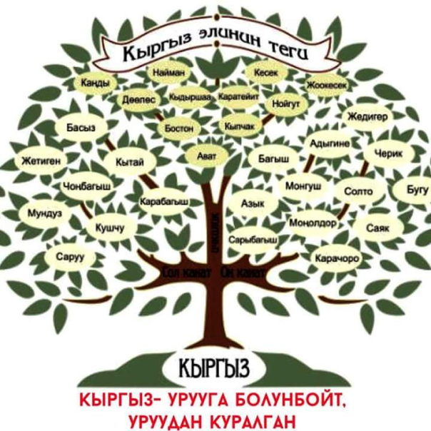

Санжыра деген эмне?
Санжыра — кыргыз элинин байыртадан багып келе жаткан ата-мурасы. Башка түрк элдеринде шежире, чежире, чажара деген түрдө айтылат, арабдын чажара – дарак деген сөзүнөн алынган. Демек, кыргызча санжыра деген сөз элдин тарыхын дарак сыяктуу айтуу дегенди билгизет. Жакынкы мезгилдерге чейин эле санжыра айтуу элди уруу-урууга, жаат-жаатка жиктөө деп түшүнүп жүрдүк. Бул — куру кыйкырык, куру сөздун арааны жүрүп, түркөйлүктүн кара бороону бабаларыбыз мурастаган асылзаада ойлорду биздин акыл-эсибизден оолактатып айдап бараткан чакта тутунган пикир эле. Эми бул кара жолтой пикирден кайта турган чак келди. Санжыра чындыгында бир уруу журт гана эмес, бүткүл адамзаттын топурагы бир, жашаган жерине, улутуна карабай, бардык пенденин түбү бир атадан келип чыгат деген ойду ырастайт. Бул адамзат акылынын эң, ыйык, эң аялуу бүтүмү эмеспи. Атамурастан алыстап, санжыраны санга кошпой, рухий жакырдануунун кесепетинен алда качан унут кала турган бөлүнүп-жарылуучулук жарааты кайра жаңырып, өсөөр элдин, өнөөр журттун жосунуна туура келбеген жоруктарды жасай баштадык. Мындай чекиликке келечегинде кемтиги бар, тек-жайын унуткан түркөй эл гана барат эмеспи. Тарыхтын эң кызыгын, конуштун эң мыктысын, ишенимдин эң тереңин, рухий дөөлөттөрдүн элде жогун мурастаган ата-бабаларыбыздын арбагына татыктуу боло албай бара жатабызбы дейм. Жаат-жаат болуп тытышып отуруп, алардан калган берекени, кутту, касиетти качырып алып, келечек урпактарыбыздын алдында осол болбойбузбу?! Элибиз бир болсун! Элибиз бар болсун! Ата-бабаларыбыздын айтканына кулак түрсөк, Адам Ата, Обо энеден таркаган эл топон суу жүргөн чакта түгөл навыт болуп, Нух пайгамбардын үч уулу, үч келини гана аман калат. Бүткүл адамзаттын бүгүнкү урпактары ошол Кам, Сам, Жапас аттуу үч уулдан таралыптыр. Алланын айтымы боюнча атайын кеме жасап, үч уул, үч келинин аман алып калып, адам көчүн улагандыгы учун Нух пайгамбарды экинчи Адам ата деп да коюшат. Жер бетинде жашаган азыркы пенденин түгөл баары ушул үч бир туугандын тукуму деп эсептелет. Биз, кыргыздар жана башка түрк, монгол элдери Жапастан таралыптырбыз. Жапастан кийин ондогон аталар өтүп, түп атабыз Долонбий дүйнөгө келиптир. Долонбийден Ак уул, Куу уул, Кызыл уул деген үч бала төрөлөт. Ак уулдан кыргыздын Оң канаты, Куу уулдан — Сол канаты, Кызыл уулдан ичкиликтер таралат.
